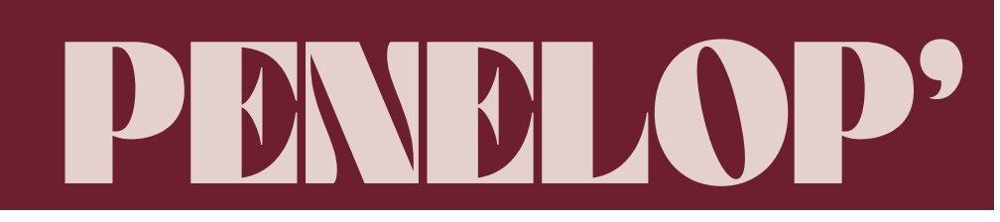
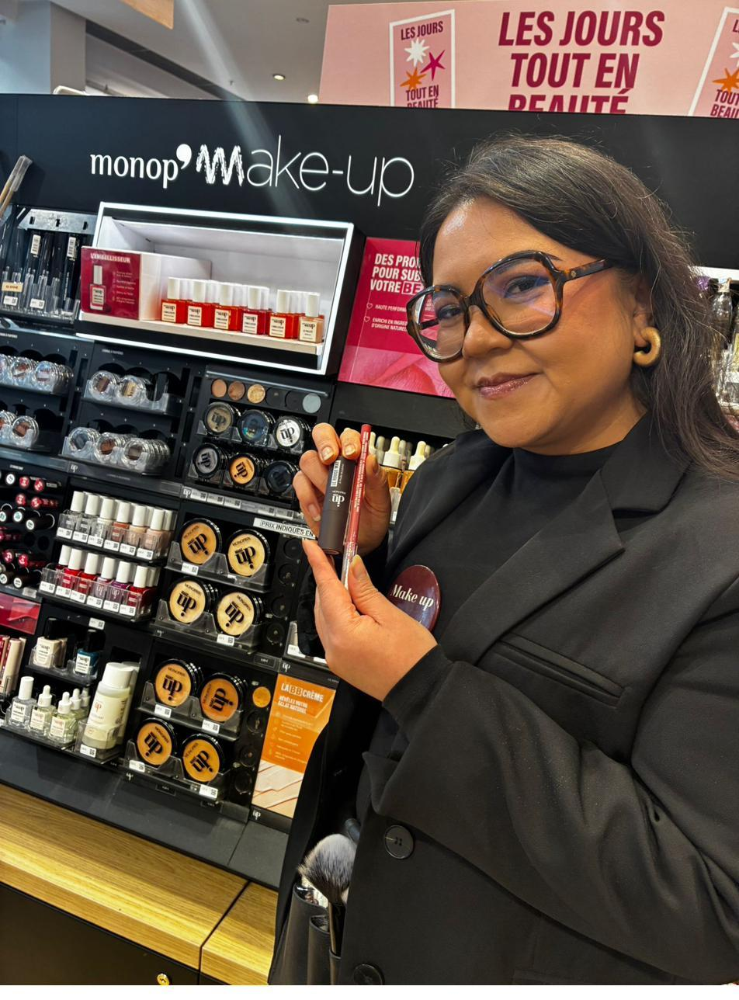
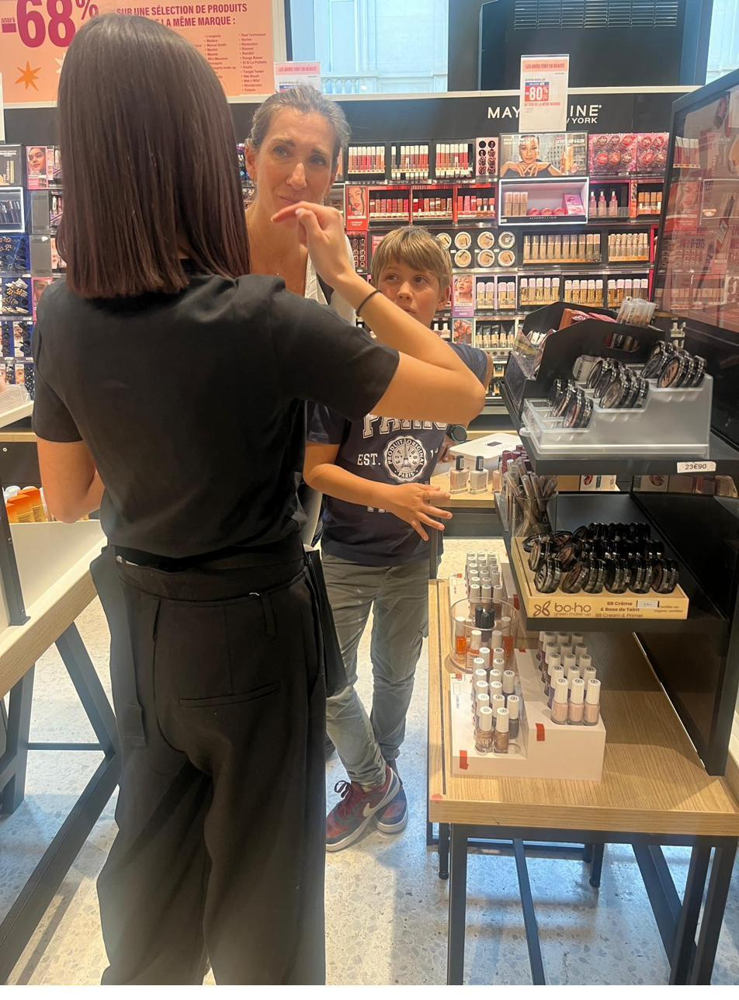

Un fil unique : la conseillère comme levier de transformation, de la conviction au déploiement.
I
Notre conviction pour Monoprix 2027
II
Ce que Monoprix veut réussir
III
Pourquoi Pénélope, l'évidence
IV
Le conseil beauté — notre méthode signature
V
Le capital humain, notre différenciateur
VI
Le pilotage de la performance
VII
L'innovation au cœur de la performance
VIII
L'accompagnement de la transformation
IX
Nos engagements & le déploiement
Treize années. Treize années à apprendre vos magasins, vos équipes, vos clientes — et à transformer cette connaissance en performance. Aujourd'hui, Monoprix écrit un nouveau chapitre beauté. Nous voulons l'écrire avec vous.
Pénélope · Direction du compte Monoprix
Jayne Fernandes — Directrice de marché
Une grammaire commerciale en 5 phases, du savoir-être au make-up flash.
Recrutement, école intégrée, segmentation des talents, volantes CDI.
KPIs lisibles, reporting J+10, gouvernance co-construite avec Monoprix.
Terminal sécurisé, Dashboard Crystal temps réel, pilotes mesurés.
Remodeling, MDD, plan prix, événementiel — magasin par magasin.
Dès J+1, rien ne s'arrête : équipes, outils et priorités déjà en place.
PERFORMANCE
de CA a minima sur les magasins animés vs non animés — notre socle mesurable.
FIDÉLITÉ
conseils qualifiés / jour, convertis en panier et en enrôlement fidélité.
RÉACTIVITÉ
reporting Top 30 livré chaque mois, magasin par magasin.
CONTINUITÉ
d'expertise déjà installée — zéro coût de transition pour Monoprix.
Les onze engagements complets (présence, turnover, formation, séminaire ≤ 65 K€) sont consolidés en COPIL Pénélope et détaillés au Vol. IX.
13 années d'historique opérationnel · 120 conseillères déjà en poste · une école de formation intégrée. Le seul candidat qui n'impose aucune transition à Monoprix.
Plus qu'un rayon beauté : un rendez-vous beauté, ancré dans le quotidien urbain.
Le conseil humain reconnecte la cliente à la marque, là où le digital seul ne suffit pas.
Chaque conseil bien donné devient un panier mieux construit et une vente croisée.
L'enrôlement fidélité s'intègre naturellement au parcours, sans le forcer.
Une qualité d'expérience perçue, mesurée dans la durée par visites mystères et NPS.
Transformer chaque interaction beauté en valeur durable — et pouvoir le prouver.
Des contacts qui comptent — 6 à 8 conseils qualifiés / jour / conseillère.
Du business — progression du panier moyen et de l'UPT, performance incrémentale suivie.
De la connexion — ventes croisées multi-rayons maquillage · soin · parfumerie.
De l'attachement — activation fidélité et réachat intégrés au parcours.
De la preuve — qualité perçue mesurée par visites mystères (partenaire Roamler) et NPS.
Sans attendre la sortie du cahier des charges, nous avons mené une lecture terrain de votre dynamique beauté : entretiens conseillères et responsables de secteur, analyse magasin par magasin. Résultat : nous arrivons avec un diagnostic déjà partagé, pas une promesse à construire.
Lecture conduite par les équipes opérationnelles Pénélope.
PARTIE DEUX
Ce que Monoprix veut réussir.
Notre lecture de votre ambition beauté — et la place que la conseillère y occupe.
§ 02.0 · LE FIL DE CETTE PARTIE
De l'ambition au terrain.
Un fil unique pour relier votre stratégie à notre périmètre.
01
L'ambition Monoprix
Devenir le spécialiste beauté de centre-ville.
02
La pression du marché
Soft-discounters, prix, concurrence sur l'animation.
03
Le nouveau modèle
Concept, plan prix, renouvellement de l'offre.
04
La conseillère, levier de la transformation
sur 107
Le maillon humain qui fait réussir la transformation.
§ 02.1 · L’AMBITION MONOPRIX : CHIFFRÉE
Une reconquête, structurée.Rester la référence “beauté lifestyle du quotidien”/ Miser fortement sur la clean beauty crédible/ Capitaliser sur les marques exclusives et émergentes/ renforcer l’expérience magasin/ Développer la stratégie multi-canal/ Miser sur les routines rapides
CA COURT TERME
+5,5 %
objectif de croissance beauté visé.
HORIZON 2030
+25 %
trajectoire de croissance à moyen terme.
REMODELING
94
magasins rénovés sur quatre exercices.
PRIX
3 388
références au plan de compétitivité prix.
Source : documents de cadrage stratégique Monoprix Beauté (à confirmer en COPIL avant remise).
sur 107
Un positionnement unique : plus premium que les hypers classiques, plus accessible que la parfumerie sélective, plus lifestyle que les pure players beauté.
NOTRE AMBITION
Devenir la référence de la beauté urbaine premium-accessible, tendance et responsable.
01
CONSTRUIRE UNE « BEAUTÉ DU QUOTIDIEN PREMIUM »
Sélection éditorialisée, au-delà du mass market
Marques tendance mais accessibles
Expérience inspirée du concept store
Routines ciblées, corners saisonniers, merchandising premium
02
MISER SUR LA « CLEAN BEAUTY » CRÉDIBLE
Sélection stricte des ingrédients
Transparence & notation simple en rayon
Recharges & éco-conception
Fabriqué en France ou en Europe, labels visibles
03
DÉVELOPPER UNE MARQUE PROPRE FORTE
Design premium & identité forte, prix accessibles
Actifs dermatologiques efficaces
Derma-cosmétique urbaine, clean chic français
Sérums, SPF visage, soins barrière, maquillage hybride
04
CRÉER UNE EXPÉRIENCE OMNICANALE FLUIDE
Diagnostic peau digital & recommandations perso
Click & collect beauté rapide
Abonnement réassort
Tutoriels vidéo & contenus intégrés (TikTok, Instagram)
05
EXPLOITER L’AVANTAGE « PROXIMITÉ + INSTANTANÉITÉ »
Implantations de centre-ville
Achats de dépannage fréquents
Mini-formats, on-the-go, routines express
Coffrets prêts à offrir, nouveautés très renouvelées
06
DEVENIR UN « CURATEUR » DE MARQUES ÉMERGENTES
Marques tendance : coréennes, indie, virales
Porte d’entrée physique pour de jeunes marques
Génère trafic, modernité et désirabilité
07
TRAVAILLER DAVANTAGE LE CONSEIL HUMAIN
Former des « beauty advisors » polyvalents
Diagnostics flash en magasin
Ateliers & événements ponctuels
08
CRÉER UNE EXPÉRIENCE COHÉRENTE AVEC L’UNIVERS MODE / LIFESTYLE
Relier beauté, mode, bien-être, déco, alimentation healthy
Sélections & collaborations inspirantes
Pop-up beauté / café / bien-être
La beauté urbaine premium-accessible, tendance et responsable.
BEAUTÉ · MODE · MAISON · VOUS
POURQUOI CE POSITIONNEMENT NOUS DIFFÉRENCIE
Évite la guerre des prix
Évite la concurrence frontale du luxe
Plus qu’un simple point de vente
♥ Monoprix, la beauté qui facilite le quotidien et fait du bien.
En France · tendances clés 2024-2025 — naturalité, soin, technologie, durabilité, expression personnelle.
01
INFLUENCE DES RÉSEAUX SOCIAUX
TikTok, Instagram et YouTube façonnent les tendances
Accélèrent la découverte produit
Influencent les décisions d’achat
02
HYBRIDES SOIN + MAQUILLAGE
Les frontières s’estompent
Des produits multi-bénéfices
Qui allient performance et soin
03
LA MONTÉE DE LA K-BEAUTY
Ingrédients innovants, routines structurées
Efficacité prouvée
Conquiert de nouveaux publics
04
BEAUTÉ INCLUSIVE + GENDERLESS
Plus d’inclusivité, moins de stéréotypes
Produits & messages pour toutes les identités
Toutes les carnations
05
LA CLEAN BEAUTY
Formules plus sûres, origine naturelle
Transparence et traçabilité
Des attentes devenues incontournables
06
PREMIUMISATION DU MARCHÉ
Qualité, expertise, expériences exclusives
Le premium s’installe durablement
07
LE SKINIMALISME
Moins mais mieux : routines courtes & ciblées
Pour une peau saine et un éclat naturel
08
DIGITALISATION & SOCIAL COMMERCE
IA, réalité augmentée, live shopping
De nouveaux points de contact avec les clientes
CE QUE RECHERCHENT AUJOURD’HUI LES CONSOMMATEURS FRANÇAIS
Naturalité & transparence
Très forte
Produits hybrides soin/maquillage
Très forte
Résultat naturel
Très forte
Durabilité & recharge
En forte hausse
Personnalisation
Croissante
Influence TikTok / Instagram
Très forte (Gen Z)
Inclusivité
Structurelle
Rapport qualité / prix
Toujours essentiel
LES SEGMENTS QUI DEVRAIENT LE PLUS CROÎTRE
→
Maquillage clean
→
Produits hybrides
→
Premium accessible
→
K-Beauty
→
Maquillage rechargeable
→
Marques communautaires & social-first
Sources : études de marché 2024-2025 (Statista, Kantar, Cosmetify).
Un marché dynamique : les marques qui innovent avec sens et transparence gagnent la confiance.
§ 02.2 · LA PRESSION DU MARCHÉ BEAUTÉ
Le contexte, en clair.Même avec l’inflation, beaucoup de consommateurs préfèrent acheter “mieux”. Le maquillage reste un “petit luxe accessible”.
PRESSION PRIX
−10 %
Les soft-discounters tirent les prix vers le bas. La différenciation se déplace du produit vers l'expérience et le conseil.
GMS
La beauté en grande distribution se réinvente autour du service.
50 %
des recherches Monoprix sont géolocalisées (étude SEO Alioze).
+
Une cliente urbaine exigeante, hybride entre
digital et magasin.
Soin
Le soin et la K-Beauty redessinent les
attentes de conseil.
sur 107
Sources : étude sémantique locale Alioze sur le compte Monoprix · panoramas marché 2025 (à sourcer en annexe).
§ 02.3 · LE NOUVEAU MODELE : NOUVEAU CONCEPT BEAUTÉ + PLAN PRIX
Trois univers, une synergie.
Le nouveau concept fait dialoguer trois univers complémentaires — et la conseillère en est le trait d'union.
1 · Maquillage — le cœur historique du conseil et de la prestation.
2 · Soins & capillaires — montée en compétence sur le conseil technique soin.
3 · Parfumerie — soins corps, hygiène et soin visage intégrés.
§ 02.3 · LE NOUVEAU MODELE : RENOUVELLEMENT DE L'OFFRE
Des chantiers d'offre à absorber.
Notre rôle : transformer chaque nouveauté en argument de conseil dès son arrivée en rayon.
01
Routines coréennes, glass skin — un nouveau langage soin à maîtriser.
02
Transition des sous-marques à orchestrer en linéaire.
03
Maquillage naturel et minimaliste, pitch dédié.
04
La marque propre revalorisée comme destination désirable.
sur 107
§ 02.4 · LA CONSEILLERE LEVIER DE VENTE CE QUE LA PRESTATION DOIT PRODUIRE
Cinq promesses, mesurables.
Transformer chaque interaction beauté en valeur durable — et pouvoir le prouver.
Des contacts qui comptent — 6 à 8 conseils qualifiés / jour / conseillère.
Du business — progression du panier moyen et de l'UPT, performance incrémentale suivie.
De la connexion — ventes croisées multi-rayons maquillage · soin · parfumerie.
De l'attachement — activation fidélité et réachat intégrés au parcours.
De la preuve — qualité perçue mesurée par visites mystères (partenaire Roamler) et
NPS.
§ 02.4 · LA CONSEILLERE LEVIER DE VENTE : NOTRE CAPACITÉ D'ABSORPTION
Déployer vite, sans rupture.
La preuve par l'exemple : sur les lancements 2026 déjà engagés (vernis, semi-permanent), nos équipes sont opérationnelles dès l'arrivée des nouveautés.
Formation flash — un module dédié par nouveauté, avant la mise en rayon.
Argumentaire prêt — pitch produit co-construit avec le bureau des achats.
Déploiement national — capacité à équiper l'ensemble du parc sans délai.
sur 107
CR6
Chiffres clés
CHIFFRE D’AFFAIRES : 140M€
NOMBRE DE COLLABORATEURS : + 5000
DATE DE CREATION : 1971
NOMBRE D’AGENCES : 22
Objectif :
Comment ? Diagnostic de peau
Un partenariat depuis plus de 5 ans avec le groupe COTY sur différentes marques en GSA et sur le réseau SELECTIF
Lancement de l’ensemble des gammes de la marque, gammes pour le visage, le rasage et la barbe, les dents, le corps et les cheveux
Objectif des animations :
Présenter et inciter à l’achat
Proposer un essai gratuit
Depuis plus de 20 ans , notre département marketing terrain est spécialisé sur l’animation de carte de fidélité pour les grands enseignes nationales
30 000 Journées de carte de fidélité
1 600 animateurs et animatrices mobilisé(e)s
Notre force
Un « vivier » d’animateurs
Formation en Elearning + Coaching sur site
Christophe BOUGEARD
Président Groupe
Benoît PORON
Directeur Général Penelope
Cécile ROST
Directrice Développement RH et Communication
Mohssine RAHHOU
DSI Groupe
Anaïs JAILLET
Directrice régionale du développement
Emilie BLANC
Directrice du recrutement
Christine CAILLET
Direction Juridique
Nathalie ROUSSY Directrice Formation
Emilie GARNIERVIVIEN
Directrice santé, diversité et inclusion
Comité de Direction
Chef de Projet commercial
Equipe Support
Xavier COINTEMENT
Directeur des RH
Jayne FERNANDES
Directrice de marché
Inès MARDIROSYAN
Directrice du contrôle financier
Florie LARBI
Directrice des Ventes
Chefs de Projet opérationnels
Oriane REY
Formatrice Monoprix
PHOTO
PHOTO
PHOTO
Penelop’, notre BU dédiée à Monoprix Beauté
Pour ce renouvellement, nous avons choisi de réunir l’équipe Monoprix Beauté sous un nom dédié : Penelop’.
Un nom volontairement proche de l’univers Monoprix. Simple à identifier. Facile à retenir.
Il traduit surtout une réalité déjà en place : une équipe qui vit le compte au quotidien, connaît les magasins, les conseillères, les périodes fortes et les exigences du terrain.
Jayne Fernandes pilote le marché au quotidien. Elle coordonne les échanges avec les équipes Monoprix, suit les sujets opérationnels et veille à la bonne circulation de l’information entre les magasins, les responsables secteur et les fonctions support.
« Nous connaissons Monoprix de l’intérieur, magasin par magasin. C’est une chance et une responsabilité : utiliser cette connaissance pour fluidifier le quotidien, accompagner les équipes et faire avancer le dispositif avec justesse en 2027 »
Florie Larbi porte la dynamique commerciale. Elle suit les performances, anime les plans d’action et accompagne les équipes pour transformer les priorités Monoprix en réflexes de vente concrets.«La performance, pour moi, ce sont des clientes mieux conseillées, des conseillères plus sûres d’elles et des magasins qui sentent que l’on avance avec eux. Les chiffres comptent, bien sûr, mais ils viennent surtout quand le terrain comprend le sens de ce qu’on lui demande »
Oriane Rey accompagne la formation des équipes. Elle traduit les nouveautés beauté, les temps forts commerciaux et les attentes Monoprix en contenus utiles pour les conseillères : posture, argumentaires, gestes de démonstration, ventes complémentaires.« Former les conseillères Monoprix, c’est rendre les nouveautés très concrètes : quoi dire, quoi montrer, quoi proposer à la cliente. Le bon conseil commence souvent par un repère simple. »
Anaïs Jaillet apporte le regard commercial sur le renouvellement. Elle prend du recul sur l’existant, challenge la lisibilité de la réponse et veille à ce que la proposition reste alignée avec les enjeux de Monoprix Beauté 2027.« L’enjeu est de transformer notre connaissance de Monoprix en une proposition claire, utile et tournée vers 2027. Une réponse qui parle autant au terrain qu’à la stratégie de l’enseigne. »
Penelop’, c’est le nom donné à une équipe déjà engagée au quotidien auprès de Monoprix Beauté, avec l’enjeu fort de sécuriser l’existant et préparer la prochaine étape du partenariat.
Coordination des services
Coordonne le pilotage quotidien du contrat Monoprix, la relation opérationnelle, le suivi des engagements et l’animation des équipes encadrantes.
Jayne FERNANDES
Directrice de marché Monoprix
Florie LARBI
Directrice des Ventes Monoprix
Oriane REY
Formatrices Monoprix
Pilote la performance commerciale, l’analyse des résultats, les plans d’action magasin par magasin et la dynamique de vente des conseillères.
Déploie les formations dédiées Monoprix Beauté : méthode conseil, nouveautés produits, posture client, ventes complémentaires et fidélité. Accompagne les conseillère Beauté dans leur montée en compétence.
PHOTO
PHOTO
PHOTO
Melinda MALOUMBY
Make Upp Artist
PHOTO
Accompagne au quotidien les conseillère Beauté dans leur montée en competence et connaissances sur le maquillage et le soin. Réalise des coaching régulier sur le terrain
Organigramme BU
Marina SAIFI
RESP ADMIN DU PERSONNEL
FORMATRICE
Oriane REY
MAKEUP ARTIST
Melinda MALOUMBY
Assistance Admin et logistique
Carole MARTINEZ
Responsable de Secteur
NORD EST
Isabelle FAGE
Treize années d'expertise déjà installée.
Treize années d'expertise déjà installée pour accélérer la nouvelle ambition beauté de Monoprix — sans repartir de zéro.
NOTRE SOCLE DE CONTINUITÉ
Quand le conseil rend un lancement spectaculaire.
Sur le déploiement K-Beauty, l'accompagnement conseil a transformé une nouveauté en succès rayon : pédagogie produit, démonstration, recommandation croisée.
LES TROIS LEVIERS ACTIVÉS
Impact chiffré (CA, UPT) à documenter avec vos données de sorties caisse.
L'animation qui transforme un magasin.
La Beauty Week démontre la capacité de Pénélope à orchestrer un temps fort : théâtralisation, démos, mécaniques cadeaux et amplification — un magasin transformé sur une semaine.
LES TROIS EFFETS OBSERVÉS
Effets chiffrés à documenter par magasin pilote (trafic, CA, UPT).
Une lecture déjà intégrée du parc, des équipes et des dynamiques magasin, qui permet d'accélérer le déploiement du nouveau concept sans temps mort.
1
Posture, sourire, disponibilité : créer le contact avant de vendre.
2
Reformuler le besoin, lire la peau, qualifier l’attente et détecter le potentiel de vente.
.
3
Proposer la solution juste, construire une routine adaptée et ouvrir vers une prestation.
.
4
Révéler le résultat, lever les freins et transformer le conseil en achat.
.
5
Activer la vente complémentaire, ancrer la routine, planifier la suite et inscrire la cliente dans la durée.
PROFIL CLIENTE
Active, pressée, en pause déjeuner
Recherche une solution beauté rapide, efficace et facile à appliquer
Souhaite un conseil simple, concret et rassurant
SES ATTENTES
Trouver un nouveau teint adapté à son quotidien
Gagner du temps avec une routine courte
Bénéficier d’un conseil expert, sans complexifier sa routine
Identifier les bons produits complémentaires : make-up, soin et accessoires
PARCOURS EN MAGASIN
1
Entrée dans l’espace beauté
Julie entre dans l’espace beauté, attirée par la présence de la conseillère et la possibilité d’obtenir un conseil rapide, adapté à son besoin du moment.
2
Accueil & expression du besoin
La conseillère l’accueille avec simplicité, sourire et disponibilité. Julie exprime son besoin : une routine teint express, facile à appliquer et compatible avec son rythme de vie.
3
Diagnostic personnalisé & cross-selling soin
La conseillère identifie son type de peau, sa couvrance souhaitée, son temps disponible et ses habitudes. Elle repère les produits complémentaires utiles (hydratation, base, SPF, primer) pour améliorer le teint sans alourdir la routine.
4
Routine adaptée, test produits & ouverture prestation
Routine courte et efficace : soin préparateur, produit teint, blush bonne mine, accessoire. Make-up flash pour montrer le résultat. Si pertinent, ouverture vers une prestation payante express (retouche teint, mise en beauté rapide).
5
Finalisation, panier & fidélisation
La conseillère accompagne Julie avant la caisse, sans encaissement. Vente complémentaire pertinente (pinceau Monoprix Make Up, soin préparateur). Valorisation de la carte fidélité pour le réachat et le retour en magasin.
♥ Une expérience beauté rapide, experte et rassurante, pensée pour le rythme du quotidien.
PROFIL CLIENTE
Jeune, ultra connectée, attentive aux tendances beauté
Suit les nouveautés repérées sur TikTok, Instagram et les réseaux sociaux
Aime tester les produits qui buzzent : glow, blur, glossy, clean girl look
Achète vite si le produit est désirable, recommandé et facile à adopter
SES ATTENTES
Découvrir les nouveautés et les tendances du moment
Tester rapidement les textures, les teintes et les effets
Vivre une expérience beauté fun, rapide et engageante
Être conseillée sur une routine tendance simple à reproduire
Être informée des offres, avantages fidélité et prestations
PARCOURS EN MAGASIN
1
Entrée dans l’espace beauté
Elsa repère l’univers beauté Monoprix grâce à une mise en avant nouveautés/tendances. Elle s’arrête spontanément pour découvrir et tester les produits aux codes beauté actuels.
2
Accueil & expression de l’envie
La conseillère l’accueille avec énergie, naturel et proximité. Elsa exprime son envie : tester une nouveauté, reproduire un look tendance ou trouver un produit repéré sur les réseaux.
3
Diagnostic personnalisé & cross-selling soin
La conseillère identifie le style (glowy, blur, clean girl, glossy, soirée), vérifie peau, teinte, couvrance et produits utilisés. Cross-selling soin simple : hydratation, base, SPF, primer ou brume fixatrice.
4
Routine tendance, test produits & prestations payantes
Test des nouveautés (teint, blush, lèvres, sourcils, glow). Routine tendance en 3 étapes facile à reproduire. Découverte des prestations payantes (retouche express, look de soirée, cours flash) pour valoriser l’expertise.
5
Finalisation, panier & fidélisation
Accompagnement avant la caisse, sans encaissement. Vente complémentaire cohérente (brume, crayon lèvres, pinceau, nouveauté). Carte fidélité, offres ciblées et invitation à revenir tester les prochains lancements.
♥ Une expérience beauté tendance, fluide et engageante, qui transforme la découverte en envie d’achat et en fidélisation.
Les prestations payantes deviennent un axe de différenciation à part entière — réalisées par des conseillères formées.
Mise en beauté — maquillage de jour, maquillage de soirée.
Pose de vernis — prestation encadrée, sans acte de manucure (réservé aux diplômés).
Démos flash — à l'occasion d'animations calendaires et promotionnelles.
À compter du 1ᵉʳ janvier 2027, le déploiement des prestations payantes sur l'ensemble du parc Monoprix ouvre une nouvelle étape de l'expérience beauté. Notre enjeu : les rendre visibles, désirables et naturelles dans le parcours beauté Monoprix.
LES PRESTATIONS DÉPLOYÉES
Maquillage jour
Maquillage soirée
Pose de vernis
Pose de faux cils
L'enjeu de ce déploiement
Renforcer la dimension servicielle du rayon et soutenir la démonstration produit
Rendre l'offre visible en magasin
Créer plus d'essai et de démonstration
Développer la conversion et la fidélisation
Créer de nouvelles occasions d'interaction et de transformation commerciale
Faire de la prestation payante un prolongement naturel du conseil, du service et de l'essai produit.
Donner de la visibilité
Prise de parole systématique, signalétique claire, mise en avant lors des temps forts. Une phrase simple : « Aujourd'hui, nous proposons aussi des prestations beauté en magasin. »
Créer l'envie par l'essai
Mini-démos, make-up flash, avant/après et conseils personnalisés : la cliente perçoit la valeur du geste avant la prestation complète.
Transformer avec le bon discours
Ne pas attendre une demande explicite : repérer les signaux d'intérêt, relier la prestation à un besoin, un événement ou une routine, puis la proposer naturellement.
Sécuriser par notre expertise
Formation 2026, masterclass, Make-Up Artist, coaching terrain et matériel dédié pour homogénéiser les pratiques.
NOTRE AMBITION
Installer progressivement les prestations payantes comme un véritable levier d'expérience client, d'animation du rayon, de performance commerciale et de fidélisation autour de Monoprix.
Un prolongement naturel du conseil, du service et de l'essai produit.
Le panier moyen progresse mécaniquement par le cross-selling — y compris sur le soin, désormais intégré à l'incentive des conseillères.
Cross-selling — maquillage + soin + parfumerie dans une même recommandation.
Incentive élargi — la performance soin entre dans la rémunération variable.
Valeur perçue — le conseil justifie le prix, même quand l'offre se banalise.
La priorité est donnée à la cliente, jamais à l'entretien du stand.
Recommander sur le besoin, le prix et l'affinité — pas sur la marge seule.
Chaque vente est une occasion d'enrôler dans le programme.
Vente principale, puis complémentaire, puis croisée.
Pour Monoprix, nous avons structuré une équipe dédiée avec un objectif clair : piloter plus près, agir plus vite, performer plus fort. La codirection fixe le cap et sécurise l’exécution, les expertises RH, formation et make-up artist renforcent la qualité du dispositif, et les huit Responsables de Secteur assurent le déploiement opérationnel au plus près des magasins. C’est une organisation pensée pour transformer chaque priorité en action terrain, chaque alerte en décision, chaque magasin en levier de performance.
BENOIT PORON
DG
Marina SAIFI
RESP ADMIN DU PERSONNEL
FORMATRICE
Oriane REY
MAKEUP ARTIST
Melinda MALOUMBY
Assistance Admin et logistique
Carole MARTINEZ
Responsable de Secteur
NORD EST
Isabelle FAGE
18 cvb
20 cvb
19 cvb
19 cvb
11 cvb
19 cvb
8 cvb
8 cvb
15 CVB Expert
83 CVB Confirmé
24 CVB Junior
Pour répondre aux enjeux spécifiques du marché Monoprix, Pénélope propose une segmentation opérationnelle des profils de Conseillères Beauté en quatre niveaux. Cette approche permet d’ajuster finement le niveau d’expertise mobilisé selon le potentiel du magasin, la maturité du rayon beauté, les objectifs commerciaux, la typologie de clientèle et les temps forts de l’année.
Notre conviction est qu’une bonne Conseillère Beauté Monoprix ne se définit pas uniquement par son diplôme ou son expérience en cosmétique. Elle doit conjuguer trois dimensions complémentaires : une posture relationnelle irréprochable, une capacité à conseiller et vendre dans un environnement multi-marques, et une aptitude à créer une expérience beauté simple, accessible et inspirante. Cette exigence rejoint les attendus du marché, qui valorise à la fois l’accueil, le conseil, la fidélisation, la démonstration produit et la contribution directe à la performance commerciale.
La gradation proposée permet ainsi de sécuriser les recrutements, d’adapter les profils aux besoins réels des magasins et de construire des parcours de montée en compétence. Elle offre également à Monoprix une plus grande souplesse opérationnelle : profils juniors à potentiel pour renforcer les viviers, profils confirmés pour assurer le socle de la prestation, profils experts pour animer les temps forts et profils luxe/marque pour les opérations à haute valeur ajoutée.
Profils types de Conseillères Beauté mobilisables pour Monoprix
Dans le cadre du marché Monoprix, Pénélope distingue quatre niveaux de profils permettant d’adapter précisément les ressources aux enjeux du point de vente, au niveau d’exigence attendu, au potentiel commercial du rayon beauté et à la nature des animations à conduire.
Cette typologie s’appuie sur les attendus observés sur le marché du conseil beauté : accueil, conseil personnalisé, fidélisation client, développement des ventes, démonstration produit, expertise maquillage et posture d’ambassadrice de marque.
Le profil Junior-standard permet d’intégrer des candidats(es) à fort potentiel issu(e)s de la vente, de l’accueil, de l’événementiel ou de la relation client. Leur valeur ajoutée réside dans leur posture de service, leur capacité à créer rapidement le contact et leur appétence pour l’univers beauté. Pénélope sécurise leur montée en compétence grâce à un parcours d’intégration ciblé sur l’environnement Monoprix, les fondamentaux du conseil beauté, les techniques de vente et les premiers gestes de maquillage flash.
| Dimension | Profil type |
|---|---|
| Positionnement | Profil d’entrée dans le métier beauté, doté d’un fort potentiel relationnel et commercial. Adapté aux magasins nécessitant une présence conseil accessible, une bonne tenue de l’espace beauté et une capacité à créer le contact client. |
| Formation recherchée | Formation commerciale, vente, relation client ou première formation esthétique/cosmétique. Le CAP Esthétique Cosmétique Parfumerie constitue un plus, car il couvre notamment le conseil client, la démonstration et la vente de produits de soin, maquillage, hygiène et parfumerie. |
| Expérience attendue | Première expérience en vente, accueil, animation commerciale, retail, parfumerie, événementiel ou relation client. Une expérience beauté est fortement conseillée pour démontrer une forte appétence pour l’univers cosmétique et une posture client solide. |
| Compétences clés | Accueil client, écoute active, reformulation du besoin, orientation vers les produits adaptés, argumentaire simple, mise en avant des nouveautés, respect des consignes merchandising, capacité à proposer un essai, une démonstration simple ou une prestation payante. |
| Qualités personnelles | Sourire, présentation soignée, aisance relationnelle, ponctualité, dynamisme, curiosité beauté, envie d’apprendre, capacité à représenter positivement Monoprix et Pénélope. |
| Niveau d’autonomie | Autonomie encadrée. Profil à accompagner par un parcours d’intégration, des briefs marques, des mises en situation et un suivi rapproché du responsable de secteur. |
Le profil Confirmé beauté correspond à une conseillère disposant déjà d’une expérience concrète dans la vente ou l’animation beauté. Elle sait traduire un besoin client en recommandation produit, proposer un maquillage flash, valoriser les marques présentes en magasin et contribuer à la dynamique commerciale du rayon. Ce niveau constitue le cœur de cible pour les magasins Monoprix nécessitant une présence beauté régulière, professionnelle et immédiatement opérationnelle.
| Dimension | Profil type |
|---|---|
| Positionnement | Profil déjà expérimenté dans la vente beauté, capable de conseiller efficacement une clientèle variée et de contribuer activement au développement du chiffre d’affaires du rayon. |
| Formation recherchée | CAP Esthétique Cosmétique Parfumerie, Bac Pro Esthétique Cosmétique Parfumerie, formation vente/conseil beauté ou expérience équivalente en parfumerie, institut, corner beauté, enseigne spécialisée ou animation commerciale beauté. Le Bac Pro constitue un niveau pertinent pour des profils combinant pratique esthétique et relation commerciale. |
| Expérience attendue | 1 à 3 ans d’expérience en parfumerie, cosmétique, maquillage, institut, animation beauté, pharmacie/parapharmacie beauté ou retail spécialisé. |
| Compétences clés | Diagnostic rapide du besoin client, conseil personnalisé, connaissance des grandes familles de produits — teint, lèvres, yeux, soin, accessoires —, vente additionnelle, rebond commercial, démonstration produit, maquillage flash simple à intermédiaire. |
| Qualités personnelles | Assurance commerciale, sens du résultat, pédagogie, tact, capacité à adapter son discours à une clientèle de proximité, fiabilité, bonne gestion des flux clients. |
| Niveau d’autonomie | Bonne autonomie opérationnelle. Profil capable de tenir l’espace beauté, de conseiller seule et de remonter les informations terrain utiles au pilotage du rayon. |
Le profil Expert beauté apporte une dimension plus expérientielle à la prestation. Au-delà du conseil produit, il permet de créer un moment beauté qualitatif, de renforcer l’attractivité du rayon et de valoriser les prestations proposées par Monoprix. Ces profils sont particulièrement adaptés aux magasins à fort potentiel, aux temps forts commerciaux, aux opérations événementielles ou aux points de vente dans lesquels l’univers beauté représente un levier important d’image et de chiffre d’affaires.
| Dimension | Profil type |
|---|---|
| Positionnement | Profil confirmé à forte expertise technique et commerciale, capable d’incarner une véritable expérience beauté en magasin et de devenir un repère pour les clientes comme pour les équipes. |
| Formation recherchée | CAP ou Bac Pro Esthétique complété par une expérience significative, BP Esthétique, BTS Métiers de l’Esthétique, Cosmétique et Parfumerie, formation maquillage professionnel ou parcours équivalent. Le BTS MECP est particulièrement cohérent pour des profils experts, car il articule maîtrise des techniques esthétiques, connaissance approfondie du produit cosmétique et commercialisation. |
| Expérience attendue | 3 à 5 ans minimum dans l’univers beauté : parfumerie sélective, enseigne spécialisée, institut, maquillage professionnel, animation multi-marques, corner beauté ou grand magasin. |
| Compétences clés | Expertise maquillage, capacité à réaliser des looks adaptés à la morphologie et au besoin client, conseil soin plus approfondi, lecture des tendances, animation commerciale, maîtrise des ventes additionnelles, capacité à former ou coacher ponctuellement des profils juniors. |
| Qualités personnelles | Crédibilité technique, posture rassurante, excellente présentation, sens du détail, sens commercial affirmé, capacité à créer une relation de confiance, leadership naturel. |
| Niveau d’autonomie | Forte autonomie. Profil capable de piloter une animation beauté sur le terrain, de gérer une clientèle exigeante et de représenter un haut niveau de conseil au sein du magasin. |
Le profil Luxe-expert-marque est mobilisé lorsque le contexte magasin, la typologie de clientèle ou l’enjeu commercial nécessite une incarnation renforcée de l’expertise beauté. Il apporte les codes de la beauté sélective et du retail premium tout en les adaptant à l’ADN Monoprix : proximité, accessibilité, exigence et plaisir d’achat. Ce niveau de profil constitue un levier différenciant pour les opérations à forte visibilité, les animations marques, les lancements ou les magasins à fort potentiel beauté. Ce profil intervient uniquement dans le cadre d'animations ponctuelles sur des temps forts de marque.
| Dimension | Profil type |
|---|---|
| Positionnement | Profil premium, issu de la beauté sélective, du luxe, des grands magasins, des corners marques ou de l’animation experte. Capable d’incarner une marque, un univers ou une expérience client hautement qualitative. |
| Formation recherchée | Formation esthétique/cosmétique, maquillage professionnel, BTS MECP, formation luxe/retail premium, école spécialisée beauté ou expérience équivalente dans un environnement exigeant. Le BTS MECP est pertinent pour ces profils lorsqu’il intègre la connaissance produit, la commercialisation, la gestion de marque et l’adaptation aux évolutions du secteur. |
| Expérience attendue | 5 ans et plus dans la beauté premium, la parfumerie sélective, les grands magasins, les marques de luxe, les flagships, l’animation experte ou le maquillage professionnel. |
| Compétences clés | Expertise marque ou catégorie, storytelling produit, cérémonial de vente, connaissance fine des textures, finis, routines et gestuelles, capacité à gérer une clientèle exigeante, excellence de présentation, maîtrise de l’expérience client premium. |
| Qualités personnelles | Élégance relationnelle, grande précision du discours, exemplarité, sens de la mise en scène produit, capacité à créer une expérience mémorable, posture d’ambassadrice, exigence personnelle élevée. |
| Niveau d’autonomie | Très forte autonomie. Profil capable de représenter une marque ou un univers beauté avec un haut niveau d’exigence, tout en s’adaptant au cadre multi-marques et accessible de Monoprix. |
Slide à compléter — responsable : à désigner.
Pour garantir la continuité de service, nous convertissons des vacataires en volantes CDI, en priorité sur Paris.
Continuité — un vivier de remplaçantes formées et disponibles.
Qualité — des volantes qui connaissent déjà nos standards et nos magasins.
Engagement — la stabilité de l'emploi au service de la fiabilité.
ÉTAPE 01
Viviers dédiés, synergies inter-métiers (event, accueil), CV beauté ciblés.
ÉTAPE 02
Entretien métier + mise en situation de conseil et de vente.
ÉTAPE 03
Parcours 30/60/90 jours, accompagnement RS dès le démarrage.
ÉTAPE 04
Coaching terrain, montée en compétence, plan de carrière.
Grâce aux synergies intermétiers du Groupe Pénélope — un sourcing qui dépasse les canaux classiques de la beauté pour sécuriser le recrutement des Conseillères dédiées à Monoprix.
projets de recrutement (sources France Travail) — viviers relation client, accueil et vente conseil très proches.
Une force intermétiers
La complémentarité de nos métiers — accueil en entreprise, hospitality, événementiel, animation commerciale, conseil en point de vente — partage un socle commun précieux pour Monoprix : sens du service, posture d'ambassadeur, aisance relationnelle, présentation soignée, sens du contact, appétence commerciale et goût de l'expérience client.
L'ATS Teamtailor, augmenté par l'IA
Notre ATS exploite cette transversalité de façon structurée. L'IA suggère des candidats du vivier existant, les rapproche d'un poste ouvert et facilite l'analyse selon les critères des recruteurs — tout en maintenant une revue humaine pour valider l'adéquation réelle au poste.
Un double avantage pour Monoprix
Plus de profondeur de sourcing (profils déjà sensibilisés à la représentation, au contact client et à la qualité de service Pénélope) et une identification accélérée des candidates à potentiel, approchées par nos recruteurs dédiés au marché Monoprix.
L'IA aide au repérage, l'humain décide
L'IA est un levier de repérage et de qualification initiale, jamais de décision automatique. La décision finale reste portée par nos recruteurs : échange individualisé, motivation, disponibilité, présentation, appétence beauté, capacité à conseiller et à vendre en magasin.
Un sourcing plus large, plus réactif et plus qualitatif — dans le respect de l'exigence humaine des métiers d'image et de conseil.
J0 – J30
Pre-boarding, Beauty Immersion Day, prise de poste sécurisée.
J30 – J60
Accélération terrain, premiers KPIs, coaching individuel.
J60 – J90
Certification « Beauty Expert Premium Monoprix ».
2026 : GLOW UP 3.0 –
L’ÈRE DE L’INTELLIGENCE BEAUTY
Nous passons d’un modèle performant à un écosystème immersif augmenté par l’IA, orienté data, performance émotionnelle et excellence client.
Nos 3 piliers différenciants :
Hybridation Smart Learning (présentiel + digital + IA)
Pilotage par la performance comportementale
Expérience collaboratrice premium dès le jour 1
L’Onboarding Nouvelle Génération des Beauty Expert - De la signature du contrat à l’excellence terrain.
Un parcours immersif, hybride, augmenté par l’IA.Une promesse : transformer chaque CVB en ambassadrice premium, performante et inspirante dès les premières semaines.
You Can Learn — Un parcours d'activation
Pas un énième programme de formation. Un dispositif court, incarné, mobile-first, conçu pour déclencher des déclics concrets.
Réparties en 4 blocs thématiques progressifs
Par capsule — format court et impactant
Mentale par capsule, 1 action immédiatement activable
Un parcours d'onboarding digital sur-mesure, entièrement pensé pour les Beauty Expertes du Groupe Pénélope intervenant chez Monoprix.
Parce que l'information ne transforme pas. L'expérience, oui.
PHASE 1 – PRE-INTEGRATION
4 Blocs — 4 Bascules Successives
Chaque bloc installe un socle : identité, posture, performance, projection. Une progression qui transforme une recrue en experte performante.
Sécuriser la prise de poste dès les premiers jours
Augmenter panier moyen et fidélisation sans forcer
Performance durable et progression mesurable
Sécuriser l'engagement et stabiliser les équipes
BLOC 1
Légitimité & Identité
Bascule : arrêter de douter. Impact : "Si vous doutez, la cliente doute. Si vous êtes sûre, elle se repose sur vous."
Bascule : normaliser l'apprentissage. Impact : Sécuriser les premières semaines réduit le décrochage et le turn-over.
Bascule : la crédibilité se joue dans la posture et l'occupation de l'espace. Impact : Transformation implicite.
BLOC 2
Le Shift Consultatif
Bascule : passer du rôle de vendeuse à celui de conseillère experte. Impact : "Quand vous diagnostiquez vraiment, vous construisez une routine." → Panier moyen augmenté naturellement.
Bascule : démontrer plutôt qu'argumenter. Impact : Une micro-démonstration de 5 minutes rassure et optimise le taux de transformation.
Bascule : conclure avec ouverture plutôt qu'insistance. Impact : "Une cliente qui ne s'est pas sentie poussée revient." → Fidélisation durable.
BLOC 3
Performance Intelligente
Bascule : utiliser les indicateurs comme outil de progression, pas comme jugement.
Impact : Une experte qui comprend ses chiffres ajuste sa stratégie — moins d'hésitation, plus de conversion.
Bascule : intégrer la technologie comme alliée, pas comme contrainte.
Impact : La maîtrise des outils digitaux renforce la posture experte sans remplacer le contact humain.
Bascule : répéter pour ancrer, pas pour mémoriser.
Impact : La confiance vient de la répétition — chaque simulation réduit l'hésitation en situation réelle.
BLOC 4
Projection & Ambition
Bascule : se projeter dans ses premiers échanges clients avant même d'arriver.
Impact : La visualisation mentale réduit le stress du premier jour et accélère la prise de poste.
Bascule : transformer les erreurs en données d'apprentissage.
Impact : Une experte qui analyse sans se juger progresse deux fois plus vite.
Bascule : ancrer une ambition concrète et mesurable.
Impact : "Dans 90 jours, vous serez la référence du corner." → Engagement renforcé, turn-over réduit.
L'Alliance de l'Incarnation, du Digital et de la Performance
Porté par Jean-Charles Mulier (Jamel Comedy Club) pour le rythme et l'impact. La vidéo #2 est incarnée par une Beauty Experte terrain : effet miroir puissant.
Format court, mobile-first. Les capsules deviennent un outil d'entraînement à la demande. Glow Up renforce la dynamique en situation client réelle.
Diffusé via vos environnements digitaux internes, le dispositif s'intègre à vos logiques de pilotage et peut être mis en perspective avec vos indicateurs terrain.
Pourquoi Cela Fait la Différence
Ce dispositif ne prépare pas à la prise de poste. Il la déclenche.
La prise de poste dès le premier jour
La montée en puissance progressive
Engagement digital et performance terrain
Une immersion terrain accompagnée pour sécuriser la prise de poste et favoriser une montée en autonomie progressive. La collaboratrice découvre l'organisation de l'espace beauté, les attentes du point de vente et les standards relationnels attendus sur l'ensemble du réseau.
CE QUE CETTE PHASE PERMET DE TRAVAILLER CONCRÈTEMENT
Posture & relation
L'accueil client
La posture professionnelle
La communication en magasin
Les réflexes de conseil
Vente & technique
Les techniques de vente fondamentales
La tenue de l'espace beauté
Les premiers gestes techniques maquillage
Un accompagnement structuré autour d'observations, de démonstrations et de mises en pratique — pour rassurer la collaboratrice et garantir une intégration opérationnelle rapide.
Lieu : PÉNÉLOPE CAMPUS — 9ᵉ arrondissement. Une école entièrement consacrée à la montée en excellence des talents terrain. Un format premium, rythmé et immersif, pensé pour créer l'appartenance dès le premier jour.
MATIN
Brand & Posture
ADN Monoprix Beauté
Expérience client signature
Posture corporelle & élégance relationnelle
Intelligence émotionnelle en point de vente
MIDI
Déjeuner networking
Créer l'appartenance dès le jour 1
Tisser les liens d'équipe
Ancrer la culture Pénélope × Monoprix
APRÈS-MIDI
Performance & Vente 3.0
Méthode de vente consultative augmentée
Storytelling produit
Atelier « Glow Up Attitude »
Simulation immersive avec IA comportementale
« Beauty Immersion Day » — créer l'excellence et l'appartenance dès le jour 1.
Un parcours de formation progressif articulé autour de quatre grands axes — le savoir-être, la performance commerciale, l'expertise beauté et la maîtrise des marques — pour développer des réflexes professionnels durables tout en sécurisant l'homogénéité des pratiques sur l'ensemble du réseau.
Un parcours spécifique est consacré aux marques Monoprix Make-Up et Monoprix Make-Up Bio, afin de garantir une parfaite maîtrise de leur positionnement, de leurs produits et de leurs argumentaires de vente.
Faire de chaque conseillère une véritable ambassadrice des marques Monoprix Make-Up et Monoprix Make-Up Bio en magasin.
Positionnement · produits phares · routines · recommandations personnalisées · cross-selling · discours de conseil.
Un suivi renforcé tout au long des trois premiers mois : la formatrice réseau, la make-up artist et les responsables de secteur assurent un accompagnement régulier pour suivre l'évolution de chaque collaboratrice.
Au terme des trois premiers mois, une évaluation complète valide les acquis opérationnels, relationnels et commerciaux. Une certification interne qui reconnaît les compétences, valorise l'engagement et garantit un niveau de qualité homogène sur l'ensemble du réseau.
Objectif : autonomie rapide & excellence relationnelle installée.
Objectif : impact mesurable sur le chiffre & montée en puissance.

Un lieu physique dédié à la formation continue — la transmission des savoir-être, des techniques maquillage et soin, et des standards relationnels et commerciaux.
Seul acteur avec école physique + IA embarquée + coaching terrain structuré
Avec GLOW UP 3.0 :
Nous ne proposons pas une formation.
Nous proposons un écosystème évolutif, capable d'intégrer :

Renforts positionnés sur les temps forts (Fête des Mères, fêtes, Beauty Week).
Synergie avec le field marketing sur le volet animatrices.
Volantes mobilisables sans délai sur le périmètre.
Plannings calés trois mois à l'avance.
À distinguer de l'organisation terrain permanente (Vol. VI) : ici, les renforts ponctuels.
Tenue actuelle : t-shirt noir + tablier, badge « Make up Expert ». Repère connu.
Variation plus habillée, cohérente avec la signature 2025-2026.
Proposition Pénélope : identifiable, différenciante vs personnel Monoprix.
Une présence au plus près des magasins, des responsables dédiés à chaque zone.
Au comptoir, l'experte du conseil et de la vente.
Pilote sa zone : visites, coaching, réactivité quotidienne.
Oriane & Mélinda : montée en compétence et masterclass.
Jayne & Florie : pilotage du compte et de la performance.
Un périmètre prioritaire suivi de près, avec des fréquences de visite calées sur l'enjeu commercial.
Visite hebdo
Sur le Top 30, par les responsables de secteur.
Suivi bimensuel
Sur le reste du parc.
Plan d'optimisation
Déclenché en cas d'écart, sans logique de sanction au premier signal.
Croiser le regard expert et la voix de la cliente pour une mesure fiable de la qualité.
Visites mystères
Grille co-construite, opérées par Roamler (partenaire reconnu).
QR code en magasin
NPS et retours clients tracés, réclamations suivies.
Contrôle contradictoire
Évaluation partagée et signée avec le magasin.
Plutôt qu'une longue liste, des indicateurs regroupés et hiérarchisés.
Revue perf magasin par magasin, KPIs, alertes. RS × responsable catégorie.
Indicateurs consolidés, animés vs non animés, plans d'action.
Bilan, plan de progrès N+1, arbitrages structurants.
Livré le 10, conseillère par conseillère.
Alerte automatique Dashboard Crystal : écart vs seuil.
Visite RS sous 5 jours, cause racine documentée.
Plan formalisé, daté, responsable identifié, partagé avec Monoprix.
Suivi mensuel jusqu'au retour au seuil. Pénalité négociable, jamais au 1er écart.
Android, écran ≥ 6", MDM mode KIOSK, antivol. 100 % équipées T1 2027.
Capsules You Can Learn, format mobile-first, sans desktop.
API externe (Alioze / Perfect Corp), traitement local RGPD.
Saisie rapide, synchro Dashboard Crystal, J+10 garanti.
Nouveautés, brand visible impact, stocks, performance live.
Cloisonnement DSI Pénélope / Monoprix, audit annuel disponible.
Une source unique de vérité, accessible par profil, qui remplace l'attente de la fin de mois.
Temps réel
CA, panier, transformation, classement par PdV et conseillère.
Multi-niveaux
De la direction Monoprix à la fiche perso de la conseillère.
Connecté
API reliée à NeoGrid, alertes ruptures et conformité merch.
Quatre pilotes mesurés, industrialisés s'ils délivrent. Pas de gadget sans ROI.
Pilote 5 magasins : diagnostic peau + try-on AR.
Catalogue routine personnalisée, push fidélité.
Essai virtuel rouge à lèvres / fond de teint.
Avatar + expert live, disponibilité étendue (2028).
Le conseil en magasin a un impact mesurable sur l'image locale de l'enseigne — les avis Google le prouvent.
Insight Alioze
La moitié des requêtes Monoprix citent un lieu précis.
Avis clients
« une conseillère adorable et de très bon conseil » — des verbatims réels remontés du terrain.
Levier
Chaque bon conseil nourrit la réputation locale du magasin.
Brief conseillère, formation flash nouveau concept. Dès courant 2026.
Renfort animation, démos flash, push fidélité.
Mesure perf vs avant rénovation, plan d'optimisation si écart.
Bonnes pratiques remontées, partagées au reste du parc.
Transformer la MDD historique en signature désirable au moment de son repositionnement.
Pitch dédié
Co-construit avec le bureau des achats.
100 % formées
Formation flash sur l'ensemble des conseillères.
MUA flagships
Make-up artists Monop Make Up activées en magasins phares.
La conseillère est aussi la gardienne du linéaire : réassort, alerte rupture, propreté, contrôle des prix affichés.
Alerte rupture
Remontée en temps réel via Dashboard Crystal.
Plan correctif 24 h
Sur les références prioritaires.
Plan Éclat hebdo
États de stock consolidés chaque semaine.
Les baisses de prix sont visibles en magasin (affichage dédié). Le rôle de la conseillère : transformer cette baisse en valeur ressentie.
Pédagogie prix
Un module formation dédié au discours prix dans le nouveau concept.
Valeur perçue
Le conseil et la démo justifient l'achat, au-delà de l'étiquette.
Cohérence
Un discours aligné sur le plan de compétitivité Monoprix.
Soft-discounters, prix qui s'affichent partout, produits qui se ressemblent. Alors la différence se joue ailleurs : dans le geste, le regard, les codes — cette façon très Monoprix de rendre le quotidien plus désirable.
Réactiver le format Beauty Week en version 2027 : un temps fort beauté drive-to-store, activé en magasin, amplifié sur les réseaux.
Faire venir en magasin
Théâtralisation, démos, mécaniques cadeaux
Amplification TikTok & influence
L'amplification orchestrée.
Un afterwork influenceuse pensé pour la Gen Z : expérience, contenu et données au service de l'enseigne.
Expérience
Un moment beauté exclusif, social-first.
Influence
Créatrices de contenu et amplification TikTok.
Data
Collecte opt-in et retargeting au profit de Monoprix.
Une scénarisation concrète du rôle de liaison de la conseillère (à approfondir dans le PAC).
La cliente vient pour un teint.
La conseillère identifie un besoin de soin.
Elle complète par une découverte parfum.
Elle enrôle et fait revenir.
Corner mobile, diagnostics, masterclass — sur les magasins à fort potentiel.
Sessions live, contenu réutilisable, marque humanisée.
Engagement de réversibilité maîtrisée en cas de changement de prestataire.
Consolidés en COPIL Pénélope, validés par le cahier des charges.
Un dispositif qui fidélise les meilleures conseillères et nourrit la performance Monoprix.
Un salaire de base aligné sur le profil, l'expertise et le magasin.
Indexé sur le CA, la performance soin et l'enrôlement fidélité.
Primes et challenges sur les temps forts et les lancements.
Évolution, formation continue et reconnaissance des talents.
À porter à Monoprix par écrit ou lors d'un point téléphonique avant remise.
Système de pénalités exact (mentionné sans détail au CDC).
Liste précise des Top 30 magasins (Annexe 3).
Périmètre exact des magasins et heures associées (Annexe 1).
Objectif chiffré sur le KPI « +4 pts » : plancher ou cible ?
Durée de contrat envisagée.
Grille d'évaluation qualité existante chez Monoprix ?
Critères pondérés d'évaluation des offres.
Une soutenance est-elle prévue après la remise écrite ?
Visibilité sur le pipeline de franchises à intégrer.
Mise à disposition de données (sorties caisse, transformation) pour l'indice animés / non animés.